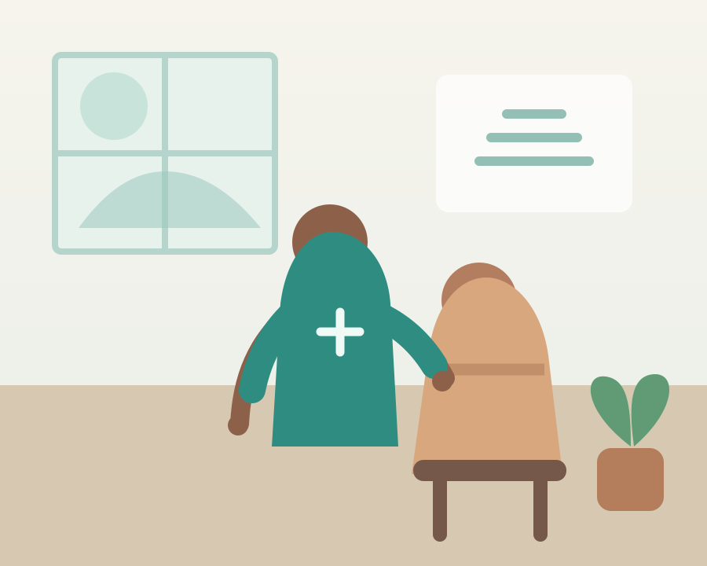

Clinical nursing at home
Professional nursing support delivered in the familiarity, comfort and privacy of home.
NurseConnectCare is the welcoming public front door for patients and families. EIRENIX Care is the secure platform behind it, helping authorised nurses manage requests, bookings and care records.


The secure care-management platform behind NurseConnectCare. Authorised nurses use EIRENIX Care to review care requests, manage bookings, maintain records and coordinate ongoing care.
Patients and families get a clear public experience, while clinicians have a separate secure workspace.
Professional nursing support delivered in the familiarity, comfort and privacy of home.
A clear pathway from care request to review, booking and ongoing coordination.
Respectful care designed around individual needs, preferences and circumstances.
NurseConnectCare stays public and easy to use. EIRENIX Care remains the secure operational layer for nurses.
Finds information and starts a care request.
Public-facing website and care access point.
Secure request, booking and records management for authorised staff.
A calm, easy-to-understand public website for accessing home nursing support.
The secure management platform used by nurses and authorised staff.
Start through NurseConnectCare and continue through the secure care pathway.